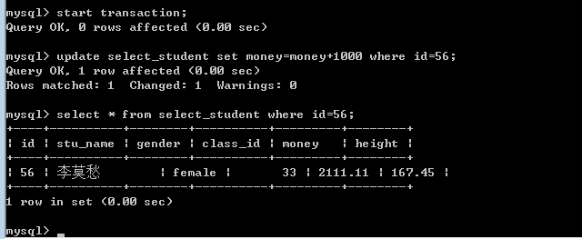
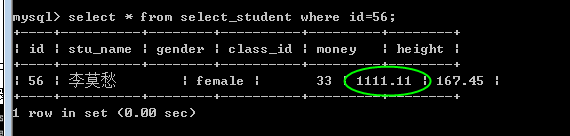

- AQS 万字图文全面解析.md.html
- Docker 镜像构建原理及源码分析.md.html
- ElasticSearch 小白从入门到精通.md.html
- JVM CPU Profiler技术原理及源码深度解析.md.html
- JVM 垃圾收集器.md.html
- JVM 面试的 30 个知识点.md.html
- Java IO 体系、线程模型大总结.md.html
- Java NIO浅析.md.html
- Java 面试题集锦（网络篇）.md.html
- Java-直接内存 DirectMemory 详解.md.html
- Java中9种常见的CMS GC问题分析与解决（上）.md.html
- Java中9种常见的CMS GC问题分析与解决（下）.md.html
- Java中的SPI.md.html
- Java中的ThreadLocal.md.html
- Java线程池实现原理及其在美团业务中的实践.md.html
- Java魔法类：Unsafe应用解析.md.html
- Kafka 源码阅读笔记.md.html
- Kafka、ActiveMQ、RabbitMQ、RocketMQ 区别以及高可用原理.md.html
- MySQL · 引擎特性 · InnoDB Buffer Pool.md.html
- MySQL · 引擎特性 · InnoDB IO子系统.md.html
- MySQL · 引擎特性 · InnoDB 事务系统.md.html
- MySQL · 引擎特性 · InnoDB 同步机制.md.html
- MySQL · 引擎特性 · InnoDB 数据页解析.md.html
- MySQL · 引擎特性 · InnoDB崩溃恢复.md.html
- MySQL · 引擎特性 · 临时表那些事儿.md.html
- MySQL 主从复制 半同步复制.md.html
- MySQL 主从复制 基于GTID复制.md.html
- MySQL 主从复制.md.html
- MySQL 事务日志(redo log和undo log).md.html
- MySQL 亿级别数据迁移实战代码分享.md.html
- MySQL 从一条数据说起-InnoDB行存储数据结构.md.html
- MySQL 地基基础：事务和锁的面纱.md.html
- MySQL 地基基础：数据字典.md.html
- MySQL 地基基础：数据库字符集.md.html
- MySQL 性能优化：碎片整理.md.html
- MySQL 故障诊断：一个 ALTER TALBE 执行了很久，你慌不慌？.md.html
- MySQL 故障诊断：如何在日志中轻松定位大事务.md.html
- MySQL 故障诊断：教你快速定位加锁的 SQL.md.html
- MySQL 日志详解.md.html
- MySQL 的半同步是什么？.md.html
- MySQL中的事务和MVCC.md.html
- MySQL事务_事务隔离级别详解.md.html
- MySQL优化：优化 select count().md.html
- MySQL共享锁、排他锁、悲观锁、乐观锁.md.html
- MySQL的MVCC（多版本并发控制）.md.html
- QingStor 对象存储架构设计及最佳实践.md.html
- RocketMQ 面试题集锦.md.html
- SnowFlake 雪花算法生成分布式 ID.md.html
- Spring Boot 2.x 结合 k8s 实现分布式微服务架构.md.html
- Spring Boot 教程：如何开发一个 starter.md.html
- Spring MVC 原理.md.html
- Spring MyBatis和Spring整合的奥秘.md.html
- Spring 帮助你更好的理解Spring循环依赖.md.html
- Spring 循环依赖及解决方式.md.html
- Spring中眼花缭乱的BeanDefinition.md.html
- Vert.x 基础入门.md.html
- eBay 的 Elasticsearch 性能调优实践.md.html
- 不可不说的Java“锁”事.md.html
- 互联网并发限流实战.md.html
- 从ReentrantLock的实现看AQS的原理及应用.md.html
- 从SpringCloud开始，聊微服务架构.md.html
- 全面了解 JDK 线程池实现原理.md.html
- 分布式一致性理论与算法.md.html
- 分布式一致性算法 Raft.md.html
- 分布式唯一 ID 解析.md.html
- 分布式链路追踪：集群管理设计.md.html
- 动态代理种类及原理，你知道多少？.md.html
- 响应式架构与 RxJava 在有赞零售的实践.md.html
- 大数据算法——布隆过滤器.md.html
- 如何优雅地记录操作日志？.md.html
- 如何设计一个亿级消息量的 IM 系统.md.html
- 异步网络模型.md.html
- 当我们在讨论CQRS时，我们在讨论些神马？.md.html
- 彻底理解 MySQL 的索引机制.md.html
- 最全的 116 道 Redis 面试题解答.md.html
- 有赞权限系统(SAM).md.html
- 有赞零售中台建设方法的探索与实践.md.html
- 服务注册与发现原理剖析（Eureka、Zookeeper、Nacos）.md.html
- 深入浅出Cache.md.html
- 深入理解 MySQL 底层实现.md.html
- 漫画讲解 git rebase VS git merge.md.html
- 生成浏览器唯一稳定 ID 的探索.md.html
- 缓存 如何保证缓存与数据库的双写一致性？.md.html
- 网易严选怎么做全链路监控的？.md.html
- 美团万亿级 KV 存储架构与实践.md.html
- 美团点评Kubernetes集群管理实践.md.html
- 美团百亿规模API网关服务Shepherd的设计与实现.md.html
- 解读《阿里巴巴 Java 开发手册》背后的思考.md.html
- 认识 MySQL 和 Redis 的数据一致性问题.md.html
- 进阶：Dockerfile 高阶使用指南及镜像优化.md.html
- 铁总在用的高性能分布式缓存计算框架 Geode.md.html
- 阿里云PolarDB及其共享存储PolarFS技术实现分析（上）.md.html
- 阿里云PolarDB及其共享存储PolarFS技术实现分析（下）.md.html
- 面试最常被问的 Java 后端题.md.html
- 领域驱动设计在互联网业务开发中的实践.md.html
- 领域驱动设计的菱形对称架构.md.html
- 高效构建 Docker 镜像的最佳实践.md.html
- 捐赠
MySQL事务_事务隔离级别详解
使用事务语法
- 开启事务start transaction，可以简写为 begin
- 然后记录之后需要执行的一组sql
- 提交commit
- 如果所有的sql都执行成功，则提交，将sql的执行结果持久化到数据表内。
- 回滚rollback
- 如果存在失败的sql，则需要回滚，将sql的执行结果，退回到事务开始之时
- 无论回滚还是提交，都会关闭事务！需要再次开启，才能使用。
- 还有一点需要注意，就是事务只针对当前连接。
下面我们来进行演示：
使用第一个链接A，开启事务后，执行一条update语句。 结果成功，数据已经变成修改之后！

此时我们没有提交。 再从其他连接B来查看，发现数据末更改：

此时如果连接A选择提交，也就是commit操作。则连接B的数据也会发生变化。
而如果连接A选择回滚，也就是rollback操作。则连接A再次查询则发现数据还原。
基本原理
语法说完了，浮躁的人也不用继续看下去了。下面简单说一下事务的基本原理吧。 提交，就会将结果持久化，不提交就不会。
如果我们不开启事务，只执行一条sql，马上就会持久化数据，可以看出，普通的执行就是立即提交。这是因为MySQL默认对sql语句的执行是自动提交的。
也就是说，开启事务，实际上就是关闭了自动提交的功能，改成了commit手动提交！
我们可以通过简单的对是否自动提交加以设置，完成开启事务的目的！ 自动提交的特征是保存在服务的一个autocommit的变量内。可以进行修改：
set autocommit = 0；关闭
set autocommit = 1；开启
还需要注意一点，就是事务类似于外键约束，只被innodb引擎支持。
特点
下面来说说事务的特点ACID。也就是原子性，一致性，隔离性和持久性。
原子性：事务的一组操作是原子的不可再分割的，这组操作要么同时完成要么同时不完成。类似于一个CAS（compare and swap）（有时间会讲解cas）
一致性：事务在执行前后数据的完整性保持不变。（例：原本的外键约束在进行事务成功后不会损坏）
隔离：当多个事务同时操作一个数据库时，可能存在并发问题，此时应保证各个事务要进行隔离，事务之间不能互相干扰。
持久性：事务一旦被提交，就不可能再被回滚！
事务并发
事务并发会带来一些问题，所以才有了不同的事务隔离级别。要想了解事务的隔离级别，就必须首先了解事务并发会带来的问题。 一般来说，会出现三类数据读问题和数据更新问题。
脏读
一个事务正在对一条记录做修改，但未提交，另一个事务读取了这些脏数据，并进一步处理，就会产生未提交的数据依赖。 举一个例子：
| 时间 | 转账事务A | 取款事务B |
|---|---|---|
| T1 | 开始事务 | |
| T2 | 开始事务 | |
| T3 | 查询账户余额为1000元 | |
| T4 | 取出500元把余额改为500元 | |
| T5 | 查询账户余额为500元（脏读） | |
| T6 | 撤销事务余额恢复为1000元 | |
| T7 | 汇入100元把余额改为600元 | |
| T8 | 提交事务 |
A读取了B尚未提交的脏数，导致最后余额为600元。
不可重复读
一个事务在不同时间读取数据不一致。 举一个例子：
| 时间 | 取款事务A | 转账事务B |
|---|---|---|
| T1 | 开始事务 | |
| T2 | 开始事务 | |
| T3 | 查询账户余额为1000元 | |
| T4 | 查询账户余额为1000元 | |
| T5 | 取出100元把余额改为900元 | |
| T6 | 提交事务 | |
| T7 | 查询账户余额为900元（和T4读取的不一致） |
可以看到最后读取的数据不一致。
幻读
幻读和不可重复读的概念类似，都是不同时间数据不一致，只不过幻读是针对新增数据，而不可重复读是针对更改数据。 看一个例子：
| 时间 | 统计金额事务A | 转账事务B |
|---|---|---|
| T1 | 开始事务 | |
| T2 | 开始事务 | |
| T3 | 查询用户id为8的数据，结果为空，执行插入（id为pk） | |
| T4 | 新增一个id为8的数据 | |
| T5 | 提交事务 | |
| T6 | 提交事务，插入报错 |
隔离级别
事务并发带来的问题前文已经描述得非常仔细了。事务的隔离级别就是为了针对并发出现的问题，不同的级别可以保证不同的一致性。
为了解决上面讲到的并发事务处理带来的问题，SQL标准提出了4个等级的事务隔离级别。不同的隔离级别在同样的环境下会出现不同的结果。
隔离级别设置及查看
mysql> select @@tx_isolation; +—————–+ | @@tx_isolation | +—————–+ | REPEATABLE-READ | +—————–+ 1 row in set (0.00 sec)
mysql> set tx_isolation = 0; (备注：0 - 3 对应数据库四种隔离级别) Query OK, 0 rows affected (0.00 sec)
下面看看四种隔离级别的比较：
Read Uncommitted（读取未提交内容）
在该隔离级别，所有事务都可以看到其他未提交事务的执行结果。本隔离级别很少用于实际应用，因为它的性能也不比其他级别好多少。读取未提交的数据，也被称之为脏读（Dirty Read）。
Read Committed（读取提交内容）
这是大多数数据库系统的默认隔离级别（但不是MySQL默认的）。它满足了隔离的简单定义：一个事务只能看见已经提交事务所做的改变。这种隔离级别也支持所谓的不可重复读（Nonrepeatable Read），因为同一事务的其他实例在该实例处理其间可能会有新的commit，所以同一select可能返回不同结果。
Repeatable Read（可重读）
这是MySQL的默认事务隔离级别，它确保同一事务的多个实例在并发读取数据时，会看到同样的数据行。不过理论上，这会导致另一个棘手的问题：幻读（Phantom Read）。简单的说，幻读指当用户读取某一范围的数据行时，另一个事务又在该范围内插入了新行，当用户再读取该范围的数据行时，会发现有新的“幻影”行。InnoDB和Falcon存储引擎通过多版本并发控制（MVCC，Multiversion Concurrency Control）机制解决了该问题。
Serializable（可串行化） 这是最高的隔离级别，它通过强制事务排序，使之不可能相互冲突，从而解决幻读问题。简言之，它是在每个读的数据行上加上共享锁。在这个级别，可能导致大量的超时现象和锁竞争。
| 隔离级别 | 读数据一致性 | 脏读 | 不可重复读 | 幻读 |
|---|---|---|---|---|
| 未提交读（Read uncommitted） | 最低级别，只能保证不读取物理上损坏的数据 | 是 | 是 | 是 |
| 已提交读（Read committed） | 语句级 | 否 | 是 | 是 |
| 可重复读（Repeatable read） | 事务级 | 否 | 否 | 是 |
| 可序列化（Serializable） | 最高级别，事务级 | 否 | 否 | 否 |
© 2019 - 2023 Liangliang Lee. Powered by gin and hexo-theme-book.